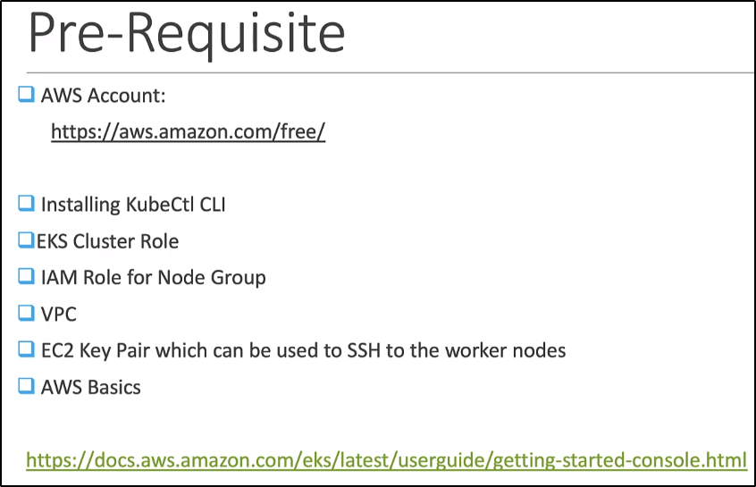

Kubernetes on AWS (EKS)
Ora creiamo il Cluster su Amazon Elastic Kubernetes Service (EKS).
Prima necessitiamo di fare un setup di queste cose:
basta andare al link sotto di docs e vedere come settarle!

Ora logghiamo nel nostro AWS account e cerchiamo per EKS:

Diamo un nome al nostro cluster:

Creiamo un Cluster con Service Role EKSRole e facciamo next:
Inoltre, lo step dopo usiamo i VPC ed Endpoints di default.
Fai "next" anche sulla sezione di login, con default senza cambiare nulla.
Fai sempre avanti.

Ecco create il Cluster!

Ora, aggiungiamo un NodeGroup:

Selezioniamo l'EKSNodeRole e facciamo next:

Lasciamo di default l'ISO che verrà usate per i Worker Nodes:
Per ora lasciamo di default.

Lasciamo default il numero di nodi da creare e creiamo il tutto:

Ora settiamo AWL CLI per permettere di lavorare da remoto:
NB: Sta sempre al link precedente!

Ora per updatare Kubeconfig, usiamo questo comando:


Ora possiamo vedere i nodi da locale!

Ora semplicemente creiamo come abbiamo fatto in google: con Kubectl!